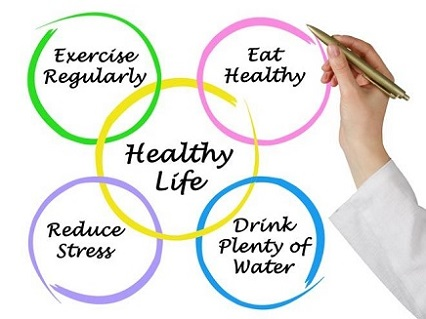

"You already know that exercise is good for your body. But did you know it is also effective in dealing with depression, anxiety, stress and more? (Robinson, Segal, Smith, M.A. 2019)"
Retrieved from https://www.chatelaine.com/health/fitness/how-to-relieve-stress-with-exercise/
This website is about lifestyle and it is for people in any ages. This would be popular for people who like to search information via Internet. Because there are many good points in the website so it could encourage people to increase exercise and decrease screen time.
The purpose of this website is for people who want to get information about doing exercise. This means that some people are first time to do exercise and they have no idea how to do it. Moreover, there is an important feature which is about recipe how to make healthy dishes. Some people eat too much after exercise so this feature would help them to solve that issue.
Retrieved from http://www.livehealthyoc.me/healthy-lifestyle-tips/
WHY EXERCISE IS IMPORTANT?
The need to increase physical exercise and decrease screen time relates to the social, physical, emotional, intellectual and environmental dimensions of wellness. People’s social wellness are affected because they are on their phone’s most of the time and not doing social activities face to face with people. Doing activities in person helps be more involved, increases self confidence and can motivate each other to be more physically active. The physical wellness is being affected because people are sitting around more and not doing more physical activities. Keeping physically active helps keep you healthy. Wasting time on the phone causes less time to do the things you need, causing stress and effecting emotions. "Many forms of exercise reduce stress directly, and by preventing bodily illness , exercise has extra benefit for the mind" (Harvard Men's Health Watch, 2011) If people take time off their screen devices, they’ll have more time and will be less stressed. Keeping physically active reduces stress and mental health. When you keep physically active your learning, thinking and judgment skills are sharper but when people are spending too much time on their devises then behaviours and educational problem start. Therefore, keeping physically actives helps your intellectual wellness. When you are physically active you are more often outside as compare to when you’re inside on-screen time, so it also affects your environmental wellness.
Retrieved from https://rejuvage.com/new-midlife-exercise-guide/
References:
Robinson, L, Segal, J, and Smith, M. 2019. The Mental Health Benefit Of Exercise. Retrieved from https://www.helpguide.org/articles/healthy-living/the-mental-health-benefits-of-exercise.htm
Havard Men's Health Watch. Exercising to Relax. Retrieved from https://www.health.harvard.edu/staying-healthy/exercising-to-relax
Food Recipes
A healthy diet can help our body to have less risk such as heart disease, reducing blood pressure, improve cholesterol levels, helping manage body weight, controlling blood sugar
Retrieved from https://drjockers.com/12-best-heart-healthy-foods/
The healthy eating feature helps you to eat consciously every day to keep you fit. This website recommends you daily diet based on your workout. The diet is divided into categories based on the exercises performed such as shredded workout or bulk workout. The feature suggests how much nutrients you should intake throughout the day to gain a healthy body such as protein intake, calories, carbohydrates etc. This feature also allows you to track your daily food intake to tally it with the recommended amount. It tracks your daily calorie consumption and the calories burned post workout. You can also set the amount of calorie you need to burn during the whole day as well as it shows recommended calorie limit. It also follows the three-life rule. If you are overeating and exercising less, then one life will be taken off each time you over eat. All entertainments would be shut down when all three lives are lost, and you can resume after three days of proper diet
If you want to lose weight or fit your body, we recomend that do not skip a meal and we suggest eating healthy foods, doing regular exercise Furthermore, if you think you are hungry throughout the day, you should eat something high in protein or drink more water because those can decrease your hunger. There are many negative effects if we skip our meals for diet or lose weight such as weight gain, binge eating, lower metabolism levels, impairing of mental focus and increase in the risk of developing diabetes (Wilhelm. 2017).
Retrieved from https://www.livetradingnews.com/junk-food-bad-health-6940.html#.XT85jehKhPY
Ways to cut back on unhealthy fats include: (familydoctor organization staff, 2017)
Rather than frying meat, bake. Take off the skin before cooking chicken or turkey. Try eating fish at least once a week
Reduce any extra fat. This includes butter on bread, sour scream on baked potatoes and salad dressings. Use low-fat or nonfat version of these foods.
Eat plenty of fruits and vegetables with your meals and as snacks
List of ways to improve your healthy.
There are many videos on this site that users can watch it to make a healthy dish for them after exercise. Furthermore, they can see information for each food in the video that seems like nutrition.
References:
Healthy Seeker. Healthy eating basics. Retrieved from https://www.heartandstroke.ca/get-healthy/healthy-eating/healthy-eating-basics
Family Doctor Staff. 2017. Nutrition: Tips for Improving Your Healthy Retrieved from https://familydoctor.org/nutrition-tips-for-improving-your-health/
Exercise Tips
This feature shows every single best method for people to do exercise correctly and beginner can understand step by step. For example, it will show how many for each set that people should do, how to breath.
Retrieved from https://www.lifealth.com/lifestyle/fitness/exercise-tips-exercise-important-healthy-heart-av/89349/
Exercising regularly has wide-ranging physical, emotional and health benefits. You need to exercise safely to remain healthy and injury-free. If it is safe and painless, you are more likely to stick to it. Safety is about using common sense, understanding basic techniques and listening to your body. See your doctor for a check-up before embarking on a physical activity program. Your doctor, physiotherapist or local sporting club can offer you tips about staying safe while exercising.Exercise tips is very important for older aduilts because there are some risk if they do not do exercise accurately (Robinson, Segal, Smith, M.A. 2019).
According to Tucker (2017), you have to change your behaviours and habits in daily life to make your workout so much more effectively. Wake up with a coffee before your morning workout, walk into the gym with a plan, get motivated with a solid workout playlist, put your phone on airplan mode, start your workout with some dynamc stretches, master foam rolling and do it often
Retrieved from https://www.pinterest.ca/pin/493847915370296430/
The first feature of 4 healthy is that the user can actually connect with the social medias or games on phone via wifi. The role of this feature would be that a timer would be set by the user by which user wants to play any game or use social media. And when the time is done, automatically the app the user would be using would get shut off and would not open till an appropriate time. This would at most help those who mostly engage themselves in just sitting and using apps like WhatsApp, snapchat or Instagram or even games and because of this they do not indulge themselves in any physical activity.

Retrieved from https://myvetahealth.com/the-3-biggest-benefits-of-keeping-active/
References:
Tucker, A. 2017. 19 Things That Will Make Your Workouts So Much More Effective. Retrieved from https://www.self.com/gallery/make-your-workouts-more-effective
Robinson, L, Segal, J, and Smith, M. 2019. The Mental Health Benefit Of Exercise. Retrieved from https://www.helpguide.org/articles/healthy-living/the-mental-health-benefits-of-exercise.htm